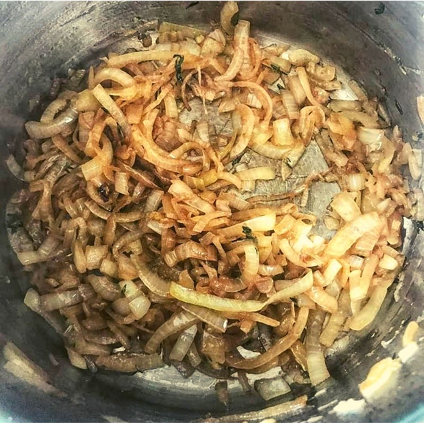
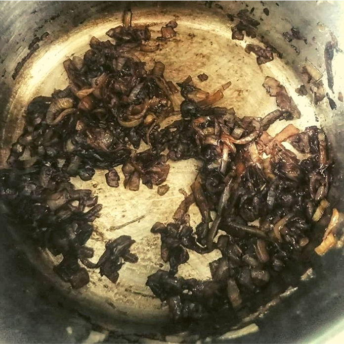

Веганский гид по Амстердаму. Рецепт веганского мак-н-чиз от Willcroft
И для этого было 2 серьезных основания:Первое и самое важное: уже давно шеф — повар предлагает полное веганское меню (закуска, суп, основное блюдо и десерт).Второе и эстетическое: я поклонница стиля и атмосферы Ар-деко, которые с любовью воссозданы в ресторане.
Да, да, тот самый луковый суп — визитная карточка французской кухни. Свои луковые супы готовят с пиететом по всей Европе: в Германии, Испании, Великобритании, Италии и, конечно же, в Австрии. Есть луковый суп по — Венски, тирольский и штирийский луковые супы. Готовят луковый суп и в Китае, Африке и на Ближнем Востоке. Но к сожалению, редко (пока!) можно встретить его веганское исполнение.
А ведь по легенде культовый французский луковый суп, который придумал сам король Людовик XV, — веганскийВ поездке Людовик оторвался от свиты, проголодался и приготовил суп из 3 простых ингредиентов, оказавшиеся у него с собой — лука, шампанского и батона багета.
Рецепт лукового супа можно найти во французской книги рецептов 16-ого века «Сборник рецептов Гийома Тиреля», известного как шеф — повар Королевского двора Франции в 14 веке. Широкую популярность суп получает в 18-ом веке, когда его подают в тавернах и закусочных на центральном Парижском рынке торговцам, покупателям и туристам. Простые ингредиенты супа делают его очень доступным
Особый аромат и вкус супа создается благодаря карамелизации лукаВозможно, благодаря луковому супу или своей природной красоте — точенной форме, ярким солнечным краскам, лук становится любимой моделью художников. Ван Гог во время своего Парижского периода, пишет несколько натюрмортов, где репчатый лук в центре композицию. Ренуар в 1881 году создает натюрморт Лук, полностью посвящений луковицам.
Лук, как культура, известен человечеству более 5 тысяч лет и сегодня существует множество сортов, которые отличаются размером, цветом и формой как луковиц, так и перьев. Чеснок, кстати, тоже относится к виду Лук.
В луковицах содержатся витамина С и B6, флавоноид кверцетин, ферменты, сапонины, минеральные соли калия, фосфора, железа и др., фитонциды, а также 8—14 % сахаров и небольшое количество белков (1,5—2 %). Именно фитонциды и наделяют лук мощными антибактерицидными и антипаразитарными свойствами.
Может быть, благодаря своим лечебным свойствам, лук часто символизирует бессмертие и единство с космосом?Кстати, рецепт лукового супа часто можно найти в книгах о красоте, здоровье и очищении.
Для супа лучше выбирать нежные сорта лука, например, белый летний, красный Бермудский или солнечный испанский (как у меня на картинке). В принципе, можно готовить из любого репчатого лука, и если вкус окажется слишком агрессивным, можно добавить при варке чуть — чуть сахара или сладкого сиропа.
Рецепт лукового супа
ингредиенты
-
Репчатый лук
3 — 4 луковицы
-
Оливковое масло
2 ст. ложки (разделить)
-
Тимьян
5 веточек
-
Бальзамический уксус
2 ст. ложки
-
Овощной бульон
2 кубика овощного бульона на 4 стакана воды (1 л) или 4 стакана овощного бульона ( 1 л)
-
Вода
1-2 стакана
-
Лавровый лист
2-3 шт.
-
Гренки или подсушенный хлеб, порезанный на кубики или крутоны
-
Соль
по вкусу
Инструкция приготовления
- Подготовить все ингредиенты
- Очистить лук и порезать его тонкими полукружочками
- Разогреть 1 ст ложку растительного масла на глубокой сковороде, добавить лук, тимьян и соль. Уменьшить огонь и готовить на маленьком огне, постоянно помешивая, пока лук не станет прозрачным и золотым (примерно 45 — 60 минут) 
- Добавить бальзамический уксус, продолжать помешивать , пока уксус не впитается (примерно 10 — 15 минут) 
- Добавить бульон, лавровый лист и воду, довести до кипения. Сбавить огонь и томить на медленном огне еще 20 — 30 минут
- Вынуть лавровый лист
- Разложить гренки или или кусочки подсушенного хлеба (крутоны) по глубоким тарелкам и налить суп
Рецептом и фотографиями поделилась преподавательница ТриЙоги Сантоши Деви. Сантоши побаловала кулинарным шедевром, когда недавно навестила нас в Вене. Также в блоге можно прочитать ее веганский гид по Гранаде : в мае 2018 года Сантоши преподавала программу ТриЙогу в Испании.
Комментарии
Отличный рецепт! спасибо автору!
Для супа лучше выбирать нежные сорта лука, например, белый летний, красный Бермудский или солнечный испанский (как у меня на картинке). В принципе, можно готовить из любого репчатого лука, и если вкус окажется слишком агрессивным, можно добавить при варке чуть — чуть сахара или сладкого сиропа.